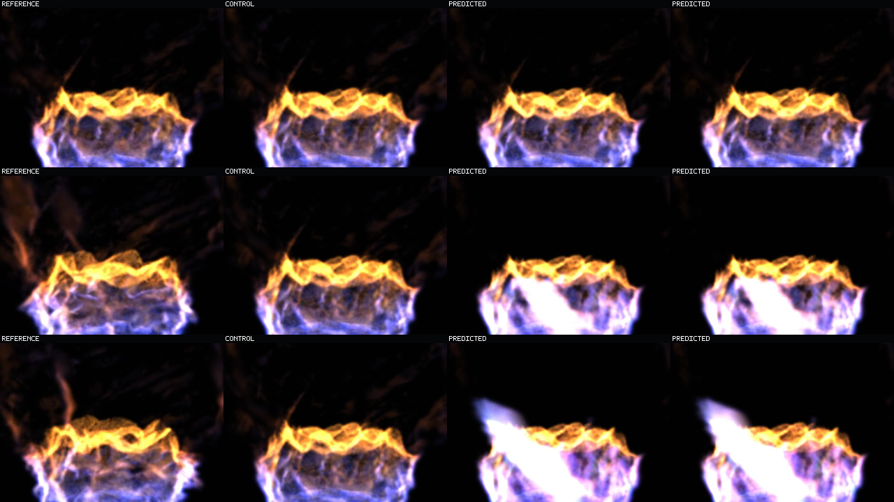
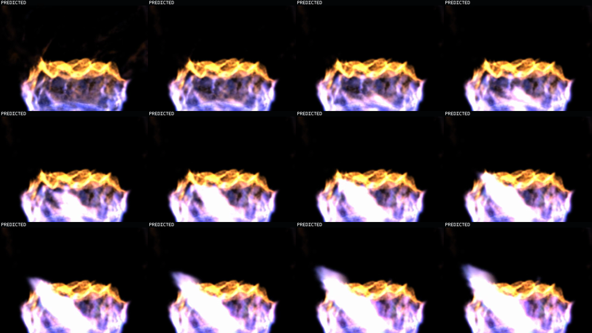

Unmasked Product-View Phase Correction
Operator observation: the prior middle control visibly moved and looked sparse. That observation was correct. Its payload was frozen, but a changing exact-target cohort mask changed opacity every frame.
Control correction: this sequence removes all target-derived opacity changes. The frozen control has 63 frames / 1 unique pixel hash.
Product-view result: both predictions genuinely move, but both develop a saturated white diagonal low-frequency sheet. Frozen present reuse beats both on every raw frame; response anchoring beats generation two on zero raw frames.
Exact held-out full splat state at each time.2. FROZEN PRESENT
One frame-zero state, pixel-identical throughout.3. GENERATION TWO
Frozen-model recurrent prediction.4. RESPONSE ANCHOR
Anchored online-exposure recurrent prediction.
The encoded video retains the source frame labels REFERENCE | CONTROL | PREDICTED | PREDICTED; the fixed headings above disambiguate the two predicted columns. Sequence is finite `10.08 s`, 63 frames at 6.25 fps, and does not loop.
Four-Role Unmasked Sequence
Static attenuation and unmatched attenuation are both exactly 1.0. No exact-target cohort changes opacity. Compare the truly static second column with the recurrent third and fourth columns.
Start / Middle / Terminal
Rows are steps 1, 32, and 63 (`0.16`, `5.12`, `10.08 s`). Columns follow the fixed four-role headings above. The growing white diagonal sheet is already dominant by the middle row.

Response-Anchor Temporal Sequence
Twelve unmasked predicted frames from the finite episode. They prove non-copied motion while showing the progressive saturated-sheet collapse that the prior cohort mask suppressed.

Same-Raster Comparison
| Role | All-frame PSNR | Steps 49-63 PSNR | Frames beating control |
|---|---|---|---|
| Frozen present | 17.174660 | 16.677406 | n/a |
| Generation two | 14.365325 | 12.811528 | 0 / 63 |
| Response anchor | 14.279653 | 12.683481 | 0 / 63 |
Response anchoring beats generation two on `0 / 63` raw frames. These scores use the exact same isolated full-splat raster, not an analytical raymarch.
Prior Witness Disposition
The prior motion-cohort witness remains useful for asking which exact registered high-change, transport, and birth states improved. It does not close product-view motion because its moving oracle opacity mask affects reference, control, and prediction. This raw witness is authoritative for present-state reuse versus full recurrent splat appearance.
Claim Boundary
One held-out basin, full stored splat states, fixed camera, and one isolated raster. This falsifies product-view advantage for these two recurrent checkpoints. It does not establish analytical-raymarch error, multi-basin behavior, runtime composition, or a universal stop for differently trained phase models.